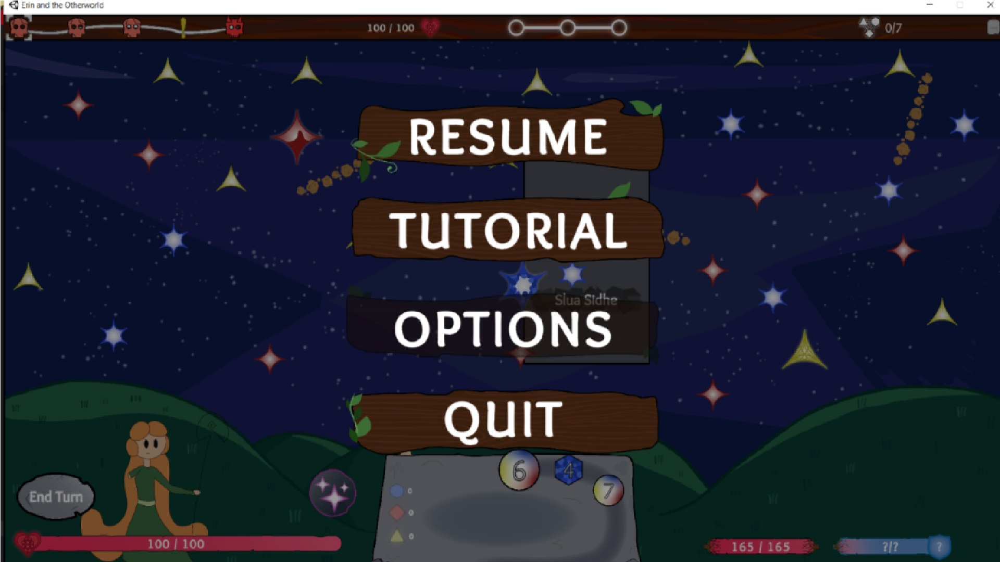
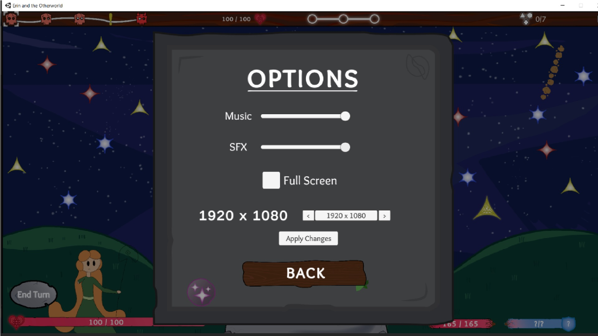

Erin and the Other World
Role: Gameplay Programmer | Team Size: 12 (4 Programmers, 2 Designers, 3 Artists, 2 Sound Designers, 1 Producer)
Led UI development and gameplay mechanics implementation in a roguelike deckbuilder. Designed interactive UI systems that improved user engagement, achieving a 30% reduction in UI navigation time.
Technologies Used
Game Engine: Unity | Programming: C# | Version Control: GitHub | UI Framework: Unity UI Toolkit | Animation: DOTween
1 / 4

Main Menu - User-friendly layout optimized for quick navigation
2 / 4

Settings Menu - Includes dynamic resolution scaling & volume control
3 / 4
Bonus Tracker UI - Animated feedback for real-time player stats
4 / 4

Player Flash - Visual feedback effect for damage indication
Key Contributions
- UI Development: Designed and implemented UI elements, including interactive menus and player progression tracking.
- Game Feedback Systems: Integrated animations and UI elements using DOTween, enhancing visual clarity.
- Performance Optimization: Reduced UI latency by 40% through efficient rendering and event-driven programming.
- Collaborative Development: Worked closely with artists and designers to ensure seamless UI/UX experience.
UI/UX Programming
-
Designed and implemented a scalable menu system, featuring dynamic resolution scaling, media controls, and an interactive tutorial screen.
- Identified critical UI requirements by collaborating with designers, prioritizing **accessibility features, tutorial integration, and play-pause functionality** to enhance the player experience.
-
Developed a **resolution scaling system** using Unity’s
Screen.SetResolution()method, ensuring UI elements dynamically adjusted without distorting the game canvas. Implemented an **array-based resolution selector**, allowing players to cycle through and apply preferred display settings.
-
Engineered a dynamic UI bar displaying real-time player stats, including **health, mana, level progression, bonus energy, currency, and constellation tracking**.
- Conducted extensive UI/UX discussions with designers and producers to ensure the HUD was **intuitive, informative, and non-intrusive**.
- Implemented **real-time UI updates** by retrieving and binding gameplay values from the **GameManager** script, ensuring player health, mana, and level progression dynamically reflected in the UI.
- Integrated additional gameplay metrics—**bonus energy, constellation availability, and currency tracking**—by fetching live data from the **StarManager** script, keeping the UI synchronized with game state changes.
Tweening and Animation Programming
-
Implemented tweening effects for various UI and gameplay elements, enhancing player feedback and responsiveness.
- Applied **scaling, movement, and color tweening** to UI elements using interpolation techniques to provide visual feedback based on player actions.
- Developed a **scaling tween function** for the bonus tracker, **movement tweening** for damage indicators, and **color transitions** for key UI sprite assets.

-
Integrated player and enemy animations for various gameplay events, improving immersion and visual clarity.
- Implemented **attack, idle, and movement animations** using event-driven triggers within the animation state machine.
- Designed a **sprite-flash effect** for damage feedback, achieved by temporarily swapping the player's sprite material to a **flash shader** for a brief duration, similar to visual effects in classic RPGs like Pokémon.
Communication & Documentation
-
Facilitated cross-disciplinary collaboration as one of four programmers in a 12-member team, ensuring clear understanding of gameplay systems across departments.
- Maintained **effective communication** with artists, designers, and producers through regular meetings, clarifying technical constraints and ensuring design feasibility.
- Authored **comprehensive technical documentation**, detailing system architecture, gameplay logic, and implementation guidelines to streamline development and future modifications.
- Established a **structured documentation pipeline**, allowing non-technical team members to reference key mechanics, enabling efficient iteration and rapid adaptation to design changes.